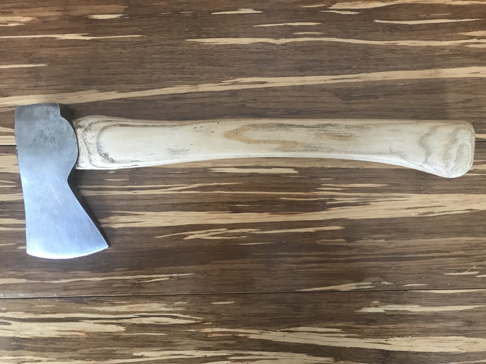
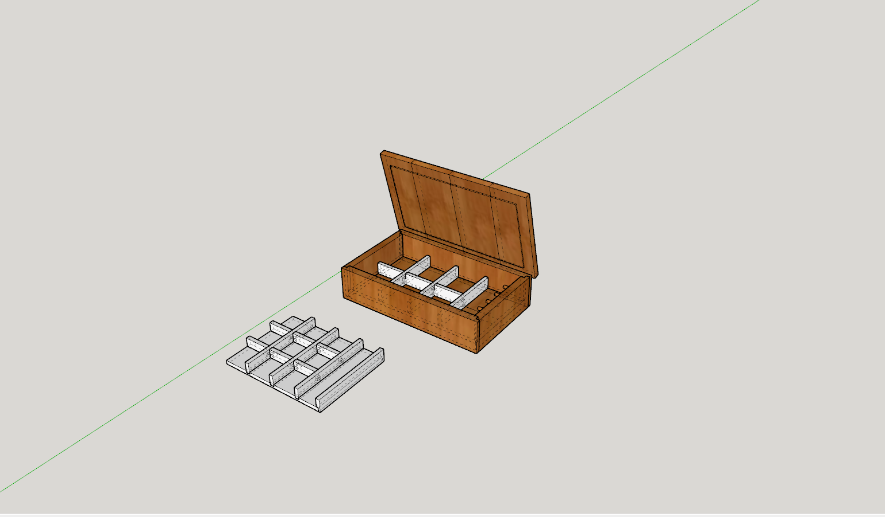

PROJEKTJEIM
Amint bemutatkozásom során említettem, nagy hobbim az asztaloskodás. Kiskorom óta nagypapámmal dolgoztam a műhelyében, nagyon szerettem, hogy fából milyen egyszerűen, milyen szép dolgokat lehet létrehozni. Ahogy egyre idősödtem, egyre több ötletem volt, hogy miket tudnék készíteni. Ezekhez az ötletekhez egyre több szerszámra, illetve szerszámgépre volt szükségem, melyek egy részét készen vettem, másik részét pedig magam csináltam, újítottam fel. Miután szert tettem egy asztali fűrészre, még több lehetőség nyílt meg előttem. Ezután készültek az alább látható különböző projektek.



